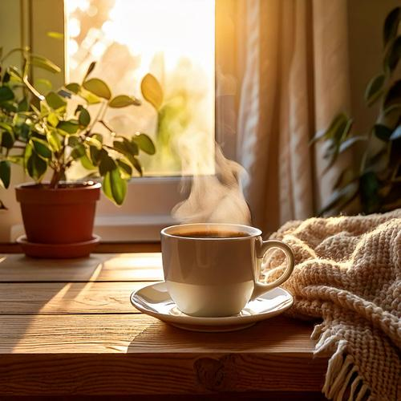

Seni melambat di tengah dunia yang serba cepat
Menemukan ketenangan melalui refleksi atas waktu dan kehidupan.
Redaksi Q-LITE · 6 menit bacaRUANG BACA, RUANG BERTUMBUH
Jeda sejenak dari riuh dunia. Temukan perspektif, inspirasi, dan cerita yang mendekatkan Al-Qur'an dengan keseharian kita.
01 / CATATAN REDAKSI
Bukan sekadar selesai membaca. Tetapi, apa yang tumbuh setelahnya?Sebuah ikhtiar kecil untuk literasi yang bermakna.
.jpg) EDISI 01 / MENEMUKAN JEDA
EDISI 01 / MENEMUKAN JEDA
PILIHAN REDAKSI
Menemukan ketenangan melalui refleksi atas waktu dan kehidupan.
Redaksi Q-LITE · 6 menit bacaTentang rasa ingin tahu, adab belajar, dan cakrawala yang terus meluas.
Redaksi Q-LITE · 5 menit baca
KEHIDUPANBelajar melihat nikmat yang sering terlewat dalam keseharian.
Redaksi Q-LITE · 4 menit bacaMenemukan jeda.
DARI HALAMAN KE HATI
Kenali Q-LITE lebih dekat lewat edisi perdana kami. Sebuah teman baca untuk menata pikiran, merawat kepekaan, dan menemukan makna.
TENTANG Q-LITE
Q-LITE adalah ruang untuk membaca, merenung, dan berbagi. Kami percaya bahwa perjumpaan dengan Al-Qur'an dapat menjadi awal dari perubahan kecil yang berarti.
SURAT KECIL UNTUKMU
Artikel pilihan, kabar edisi, dan inspirasi untuk jedamu.